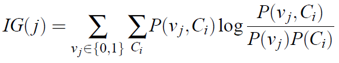

Introduction
Basketball is one the most popular games in the United States and also has much popularity abroad. It began as a simple gym exercise in the late 1800’s and slowly moved from high schools and into colleges. Finally, in the early 1950’s, the National Basketball Association (NBA) emerged as a major governing body of the professional version of the game. Ever since, the NBA has presided over a yearly tournament between official professional teams from all over North America. The annual tournament is called a season. During a season, each team competes against others several times and track their wins and losses. After a number of games (in the hundreds), the 16 teams with the most wins compete against each other in an elimination style tournament called the Playoffs. Playoff matches are best four out of seven. The team that wins the Playoffs win the whole season.
Our goal in this project is to attempt predicting the outcome of Basketball matches before they happen based on the characteristics of the two teams that are competing. While this may not be something that will benefit humanity in a great way, there a still some interesting applications of such predictions. For example, fantasy basketball is a virtual game where players can create teams based on real players and earn ranking based on the performance of their selected basketball players in real life. It may be beneficial for them to be able to predict how various teams will do and pick real players based on that. Fantasy Basketball, and fantasy sports in general generate millions a year.

Approach
Our approach, as shown in Fig 1 consisted in two basic steps: preprocessing the data and using several classification methods. Because of the length of the course we were not able to apply sequence pattern extraction or Markov Models, instead, we extracted the N-grams from each binary file, we calculated the information gain of each N-gram and selected the top 500 N-grams.
Data Preprocessing
We first extracted the N-grams, with n=4, using the kfNgram tool. The information gain was calculated using the average mutual information [Yang and Pederson, 1997].
where Ci is the ith class, vj is the value of the jth attribute, P(vj, Ci) is the proportion that the jth attribute has the value vj in the class Ci, P(vj) is the proportion that the jth n-gram takes the value vj in the training data, and P(Ci) is the proportion of the training data belonging to the class Ci [Kolter and Maloof 2006].
Once the information gain (IG) was calculated we selected the top 500 N-grams with the highest IG. Then these 500 N-grams represented the boolean attributes where "true" means the N-gram is present in the malware file or "false" if absent. We scanned each file to determine which of the 500 N-grams selected were present and transformed the training set into .arff format in order to be read by Weka in the classification phase.
Classification
To assign the malware executables one of the nine families, we used Weka [Witten and Frank 2005] to run several classifiers. The algorithms used were: Decision Trees (J48), Naïve Bayes and Support Vector Machines (SVM), and also applied "boosting" and "bagging" to these classifiers.
Results

The results of our evaluation will show how the feature extraction methods outlined in the Kolter paper and the family classification methods in the Rieck paper are scaled, and how we replicated and improved upon their results. We had the most success with the accuracy of the SVMs for both the API strings and the n-gram feature sets. The error-rate analysis, AUC, precision and recall had the best results for both of these feature sets.


As shown in the figures, the per-class accuracy of both methods was strongest for the linear SVM classifiers as well with the n-gram approach having all around better class accuracy results in general compared to the API strings method. We can attribute these findings to the fact that the API strings are not as unique a feature identifier as the n-grams.
While the Rieck data set is comparable in size to the Microsoft data set, we achieved better accuracy and a better AUC measure. On average Rieck et al were only able to accurately classify 88% of their sample file [15], where we were able to correctly assign 98% to the proper malware family.
Conclusion
We presented a methodology for classifying malware binary files into nine families. The initial approach for the project was to extract the API libraries used in each file and make them the features in the classification models. But another approach was taken, using N-grams from the binary files. We described process of extracting N-grams, with n=4, from the executable files, then calculate the information gain (IG) of each of them in order to select the top 500 N-grams with the highest IG. We described how to preprocess the large data set in reasonable time, and how to transform it into .arff format to use it as input in Weka. We used several classifiers (Decision Trees, SVM and Naive Bayes) and compared the results to the ones obtained using API libraries. Our classification algorithms in Weka reached about 98% of accuracy, better than the API libraries. But we proposed in a future work, to use sequential pattern extraction or Markov Model which intuitively should lead to better results. We were able to process such large data set by optimizing the merging of N-grams using a min-heap, but for larger data sets we would recommend a distributed computing approach by using Hadoop or some other tool that facilitates map-reduce. We consider this methodology could be interpreted as a starting point in this topic of classifying malicious software into families, and later evolve into a more complex and robust solution by applying more sophisticated techniques and algorithms.
References
Mihai Christodorescu, Somesh Jha, Sanjit A. Seshia, Dawn Song, and Randal E. Bryant. 2005. Semantics-Aware Malware Detection. (2005), 32–46.
William H. Fletcher. 2012. Data mining: Practical machine learning tools and techniques. (2012). http://kwicfinder.com/kfNgram/kfNgramHelp.html
J. Zico Kolter and Marcus A. Maloof. 2006. Learning to Detect and Classify Malicious Executables in the Wild. 7, Article 19 (2006), 2721–2744.
Abdurrahman Pekta, Mehmet Eri, and Tankut Acarman. 2011. Proposal of n-gram Based Algorithm for Malware Classification. (2011).
Ohm Sornil and Chatchai Liangboonprakong. 2013. Malware Classification Using N-grams Sequential Pattern Features. (2013).
I. H. Witten and E. Frank. 2005. Data mining: Practical machine learning tools and techniques. (2005). http://www.cs.waikato.ac.nz/ml/weka/index.html
Y. Yang and J. O. Pederson. 1997. A comparative study on feature selection in text categorization. (1997), 412–420.
N. Zhong, Y. Li, and S. T. Wu. 2012. Effective Pattern Discovery for Text Mining. 24, Issue 1 (2012), 30–44.